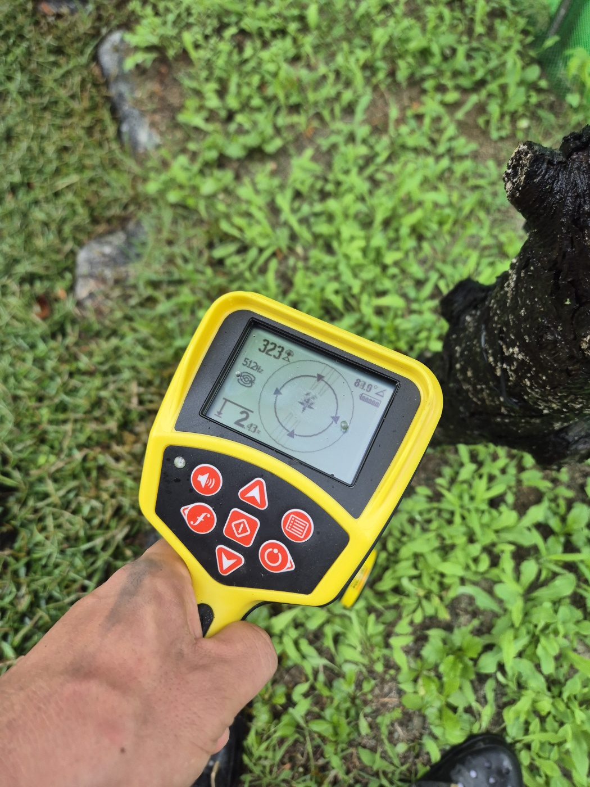

안녕하세요.. 고고고 설비입니다.. 평택, 천안, 안성 여러 현장을 다니다 보면 하수구막힘 못지않게 자주 받는 문의가 "배관이 정확히 어디로 지나가는지 모르겠다"는 거예요. 오늘은 저희가 땅속 배관관로를 어떻게 찾아내는지 소개해드리려고 합니다.
마당이 넓은 단독주택이나 오래된 건물은 배관 도면이 남아있지 않은 경우가 많습니다. 공사나 조경 작업을 앞두고 땅을 파야 하는데 배관 위치를 모르면 자칫 배관을 손상시킬 수 있어서, 작업 전에 정확한 위치부터 확인하는 게 우선입니다.
사진처럼 관로 탐지기를 배관 위쪽 지면에 대고 신호를 잡으면, 화면에 배관까지의 깊이와 방향이 숫자로 표시됩니다. 이 현장에서는 지하 2.43m 깊이에서 신호가 잡혔어요. 탐지기를 천천히 이동시키면서 배관이 어느 방향으로 꺾이는지도 함께 확인할 수 있습니다.
위치를 찾은 뒤에는 접근 가능한 지점을 통해 내시경 카메라를 넣어 배관 안쪽 상태까지 함께 검사합니다. 막힘이나 손상, 이물질 여부를 눈으로 직접 확인한 뒤에 필요한 작업을 결정하는 방식이에요.
이렇게 관로 탐지와 내시경 검사를 함께 진행하면, 불필요하게 땅을 파헤치지 않고도 정확한 위치에서 필요한 작업만 할 수 있습니다. 배관 위치가 궁금하시거나 공사 전 사전 확인이 필요하시면 언제든 편하게 연락 주세요.
고고고 설비는 주택, 아파트, 원룸, 상가, 공장의 생활 하수 오수 배관을 관리해 주는 업체입니다. 고고고 설비에 전화 주시면 친절상담 정확한 진단 확실한 해결로 보답해 드리겠습니다!!